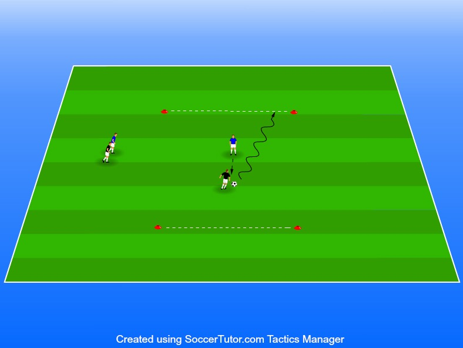

Utmana, kortlinje som mål finta och dribbla förbi en motståndare
Yta 16x8m
4 spelare per yta
1 boll igång åt gången kan
1 mot 1 övning som handlar om att ta sig förbi sin motspelare och däremot ta ut så att det finns 2-3 bollar per yta driva förbi motståndarens mållinje och stanna den med kontroll
Driver spelaren bollen över linjen utan kontroll räknas inte “målet”
Båda spelarna agerar anfallare och försvarare, tar man bollen så blir man anfaller och förlorar man den så blir man försvarare
Varje par jobbar i ca 1 minut sen byter man
För att hålla högt tempo i övningen kör vi ingen aktiv vila utan låt de andas så att de kan ge allt när de väl är inne. Anledningen till det är att när vi ska utmana en spelare krävs det accelerationer. Är det trötta orkar de inte accelerera på samma sätt vilket gör att övningen inte riktigt får samma syfte
Se till att ha tränat ordentligt på finter innan så det blir ordentliga tempoväxlingar och riktningsförändringar efter finten
Upp med blicken så att de har koll på sina motståndare
Täck bollen, våga använda fysiken och gå in i närkamper
Viktigt att nivåindela!